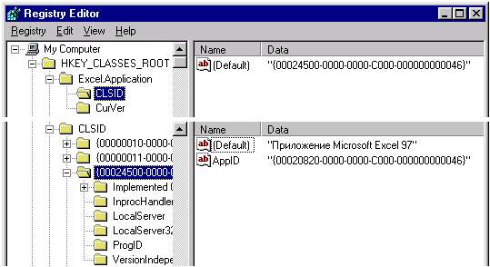

Эта часть описывает основы OLE и не является полным руководством по OLE (ActiveX) и OLE технологиям. Для более глубокого изучения OLE Вам следует обратиться к руководствам, приведенным в списке литературы.
Центральным понятием в OLE является понятие "интерфейс". Под интерфейсом понимается некоторое множество функций, организованное по определенному стандарту. Этот стандарт называется COM (Common Object Model) и вследствие этого OLE-объекты иногда называют COM-объектами. Стандарт COM определяет таблицу функций интерфейса, называемую vtable. Эта таблица имеет фиксированную структуру и включает в себя указатели на функции данного интерфейса, что позволяет вызывать функции интерфейса по ссылке на интерфейс.
В стандарте COM определен один интерфейс, называемый IUnknown, от которого наследуются все остальные OLE интерфейсы (т.е. все интерфейсы содержат функции IUnknown). В IUnknown входят три функции:
AddRef - увеличивает счетчик ссылок объекта на 1 (см.стр. * );
Release - уменьшает счетчик ссылок объекта на 1 (см.стр. * );
QueryInterface - запрашивает интерфейс у OLE объекта.
В OLE используется большое количество различных интерфейсов, построенных по единому стандарту COM, с различными наборами функций. Каждому интерфейсу присвоен уникальный номер: GUID.
|
GUID (Globally Unique Id entifier) - 16-байтное число, создаваемое по специальному алгоритму. Этот алгоритм гарантирует уникальность числа "в пространстве Вселенной за время ее существования". Обычно это число записывается в виде {89ABCDEF-1234- 5678-9ABC-DEF012345678}. |
Уникальный номер интерфейса называют IID (Interface Id entifier) для отличения от других идентификаторов.
Каждый OLE-объект реализует один или несколько интерфейсов для выполнения различных задач и обязательный интерфейс IUnknown. Для создания объекта и получения указателя на один из интерфейсов используются функции Win32: CoCreateInstanceEx, CoCreateInstanceFromFile, CoGetClassObject и т.д.
Одним из параметров функций является CLSID (Class Id entifier) - это GUID, используемый при создании объекта. При создании объекта система использует информацию, хранящуюся в регистрационной базе данных системы (Registry).

Эта информация организована следующим образом:
Другим параметром функций при создании объекта передается IID - идентификатор необходимого интерфейса. Функции, создающие объект, возвращают указатель на запрошенный интерфейс. Указатель на этот интерфейс может быть использован для получения другого интерфейса вызовом QueryInterface.
Каждый объект поддерживает счетчик ссылок других объектов на себя. Этот счетчик изменяется вызовами AddRef и Release интерфейсов объекта. Если после очередного вызова Release счетчик ссылок достигает нуля, это означает, что ссылки на данный объект отсутствуют и он уничтожается. QueryInterface увеличивает счетчик ссылок автоматически .
Технология OLE Automation основывается на одном из наиболее известных и часто используемых в OLE интерфейсов - интерфейсе IDispatch . Этот интерфейс позволяет читать и писать свойства OLE Automation объекта и вызывать его функции с произвольным списком параметров. OLE Automation объектом называется любой OLE объект, реализующий IDispatch. Для вызова функции объекта необходимо определить ее номер, затем вызывать метод Invoke интерфейса IDispatch и ей в качестве параметров передать номер вызываемой функции и массив ее параметров. Следует отличать функции OLE
Automation объекта от функций интерфейсов (в частности, IDispatch) -интерфейс имеет жесткий неизменяемый список функций, а OLE Automation объект - произвольных список свойств и функций. Наиболее широко этот интерфейс используется в языке Visual Basic, где определен тип Object - в действительности это указатель на IDispatch.
В IDispatch входят следующие функции:
GetTypeInfo, GetTypeInfoCount - функции для работы с информацией о типах (за дополнительной информацией об этих функциях и работе с типами обращайтесь к рекомендованной литературе);
GetIDsOfNames - позволяет получить номер функции объекта по ее имени;
Invoke - вызов необходимой функции по номеру.
При передаче параметров функции используется структура VARIANT. Эта структура представляет собой объединение различных типов данных и может содержать практически любое значение, используемое на практике.
Этот стандарт позволяет разрабатывать приложения, предназначенные для работы с документами разных видов. Активные документы составляют с главным окном приложения общее меню и систему панелей инструментов, поэтому их можно интегрировать в общем окне. Примером приложения, использующего Активные документы, является Microsoft Binder из состава Microsoft Office. Для создания Активных документов в различных средах программирования чаще всего используются Мастера (Wizards), так как структура Активного документа достаточно сложна и его создание "с нуля" затруднительно.
Также можно рекомендовать различные книги по использованным в данной методике средствам программирования (например, серии "... для чайников" или Microsoft Press "Running ..."), так как в них часто приводится необходимая информация, сопровождаемая практическими примерами.